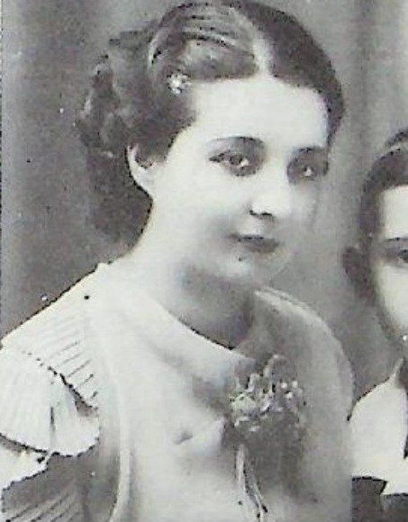

María de la Luz García Narro de López Villarreal
| María de la Luz García Narro de López Villarreal | |
|---|---|
 Retrato | |
| Descripción | Pintora y coleccionista · Saltillo y Monterrey |
| Fechas / lugar | 1904–1989 (según libro) |
| Línea familiar | García Narro, García Garza |
María de la Luz García Narro de López Villarreal (1904–1989 (según libro)) — [Según Durón Jiménez, 1992; sin documento verificado] Pintora y coleccionista saltillense; estudió en el Colegio de la Purísima y en el Colegio de la Santa Cruz (Austin, Texas); alumna de su madre en la Academia (1946-1955) y después cuatro años del maestro español Bardasano en México. Ganó un premio en la exposición de Cartel de la Alianza Francesa y el tercer lugar en la Exposición de la Flor (México); participó muchos años en el Patronato de Amigos de Catedral. Casó con Guillermo López Villarreal; tres hijos (Guillermo, Luz Elena y Beatriz). Murió el 15 de noviembre de 1989.
Contenido
- 1 Vida y cronología (según las fuentes citadas; sin documento verificado)
- 2 Familia (según el libro; sin documento verificado)
- 3 Parentescos según el libro (sin documento verificado), con las fichas de esta galería y del archivo
- 4 Cargos, oficios y obra
- 5 Lo que dice el libro (sin documento verificado)
- 6 Notas del libro
- 7 Investigación complementaria
- 8 Contradicciones del libro
- 9 Dato en investigación
- 10 Fuentes
- 11 Referencias
Aviso de método. Esta página reúne lo que dice el libro de Martha Durón Jiménez, Orígenes de una fundación (Archivo Municipal de Saltillo, 1992), y otras fuentes secundarias. Nada de ello se da por establecido: las filiaciones, apellidos y fechas se presentan como «según Durón Jiménez, p. X; sin documento verificado». Sólo se tendrá por probado lo que respalde una imagen de documento (acta, protocolo, registro) leída y transcrita; cuando se incorpore, se indicará aquí.
Según Durón Jiménez, Orígenes de una fundación (1992); sin documento verificado: Pintora y coleccionista saltillense; estudió en el Colegio de la Purísima y en el Colegio de la Santa Cruz (Austin, Texas); alumna de su madre en la Academia (1946-1955) y después cuatro años del maestro español Bardasano en México. Ganó un premio en la exposición de Cartel de la Alianza Francesa y el tercer lugar en la Exposición de la Flor (México); participó muchos años en el Patronato de Amigos de Catedral. Casó con Guillermo López Villarreal; tres hijos (Guillermo, Luz Elena y Beatriz). Murió el 15 de noviembre de 1989.
Biografía elaborada a partir del libro de Martha Durón Jiménez, Orígenes de una fundación. Genealogía de don José García Rodríguez, 1530-1992 (Archivo Municipal de Saltillo, 1992), cuyo texto se cita en extracto con su página, y de investigación complementaria con fuentes citadas. Lo que no tiene fuente se marca «dato en investigación»; las contradicciones se señalan sin corregirlas.
Retrato: Detalle de la fotografía con su hijo Guillermo (libro, p. 47). Fuente de la imagen: Durón Jiménez, Orígenes de una fundación, 1992.
- Años (según el libro y fuentes citadas; sin documento verificado): 21-may-1904 (árbol) – 15-nov-1989
- En el libro: pp. 47-48 (texto; foto p. 47); árbol p. 54
Vida y cronología (según las fuentes citadas; sin documento verificado)[editar]
- 21-may-1904 Nace en Saltillo. (libro p. 47; árbol p. 54.)
- s/f Estudia en el Colegio de la Purísima y después en el Colegio de la Santa Cruz (Austin, Texas) por las circunstancias de inseguridad. (libro p. 47.)
- 1946-1955 Clases de pintura con su madre en la Academia. (libro p. 47.)
- s/f Cuatro años de estudios de pintura en México con el maestro Bardasano (flor y paisaje). (libro p. 47.)
- s/f Premio en la exposición de Cartel de la Alianza Francesa (bimilenario de París) y 3.er lugar en la Exposición de la Flor, México; exposiciones colectivas en San Luis Potosí, México y Saltillo. (libro p. 47.)
- 7-mar-1930 Nace su hija Luz Elena López García (↔ Héctor Porras Howard, cc 24-abr-1953). (árbol p. 54 (imagen verificada).)
- 6-nov-1977 Fallece en Monterrey su hija Beatriz López García. (libro p. 48.)
- 15-nov-1989 Fallece; era propietaria de Mi abuela, el cuadro de su madre. (árbol p. 54; libro p. 47 (pie de foto: «1904-1989») y nota 40.)
Familia (según el libro; sin documento verificado)[editar]
Padres: José García Rodríguez y María Narro Valdés. Esposo: Guillermo López Villarreal, hijo de Adelaido López y Adela Villarreal (hermano de Roberto López Villarreal, esposo de su hermana Rosario). Hijos: Guillermo López García (↔ Rosa Jiménez; Tecnológico de Monterrey), Luz Elena López García (n. 7-mar-1930; diseño; ↔ Ing. Héctor Porras Howard, n. 26-ago-1927, † 1-dic-1989, egresado de la Narro, organizador del programa Conaza) y Beatriz López García (presidenta nacional de exalumnas del Sagrado Corazón; ↔ Ing. Armando Guerrero; hijos Beatriz, Armando y Pilar Guerrero López; † 6-nov-1977 en Monterrey). Árbol p. 54: nietos Guillermo, Ricardo, Fernando, Rosana, Martha, María Esther y Felipe López Jiménez, etc.
Parentescos según el libro (sin documento verificado), con las fichas de esta galería y del archivo[editar]
- Padres: Don José García Rodríguez · Doña María Narro Valdés
- Hermanos: José García Narro · María del Carmen García Narro · Antonio García Narro · María del Rosario García Narro · Fernando García Narro · Lic. Dionisio García Narro
Cargos, oficios y obra[editar]
Pintora y cartelista; coleccionista (poseía «una extraordinaria colección de cuadros de grandes maestros como Gilbert Chávez, Alfredo Martínez Ramos, el padre Gonzalo Carrazco, Rubén Herrera y otros», nota 49); participó muchos años en el Patronato de Amigos de Catedral (libro p. 47).
Lo que dice el libro (sin documento verificado)[editar]
Extracto fiel de Durón Jiménez, Orígenes de una fundación, 1992, pp. 47-48 (texto; foto p. 47); árbol p. 54. Se conserva la ortografía original; [sic] señala un error del original y [n] una llamada de nota.
MARÍA DE LA LUZ GARCÍA NARRO:
Nació en 1904 en la ciudad de Saltillo, sus primeros estudios los realiza en el Colegio de la Purísima y posteriormente debido a las mismas circunstancias que ya nombramos anteriormente en el caso de doña Carmen, su hermana, también realiza sus estudios en el Colegio La Santa Cruz, en Austin, Texas.
Desde muy joven toma clases de pintura con su señora madre, doña María Narro en la Academia, de 1946 a 1955. Posteriormente, va a continuar sus estudios de pintura a la ciudad de México con el Maestro Bardasano, pintor español, por un lapso de cuatro años, pintando flor y paisaje.
Al conmemorarse el Segundo Milenio de la Fundación de París, la Alianza Francesa organizó una exposición de Cartel, en este evento, doña María de la Luz obtuvo un premio y en la Exposición de la Flor, en México, ocupó el tercer lugar. Participó también en exposiciones colectivas en San Luis Potosí, México y aquí en Saltillo. Participó en el Patronato de Amigos de Catedral por muchos años.[49]
[FOTO – pie de foto]: María de la Luz García Narro de López Villarreal, 1904-1989 con su hijo Guillermo.
Doña María de la Luz contrae matrimonio con don Guillermo López Villarreal, hijo de don Adelaido López y doña Adela Villarreal, procrean tres hijos: Guillermo, Luz Elena y Beatriz.
Guillermo López García, realiza sus primeros estudios en el Colegio Zaragoza, posteriormente es enviado a la ciudad de México para continuar sus estudios de bachillerato en el Colegio Cristóbal Colón y después ingresa al Tecnológico de Monterrey.
Luz Elena López García, realiza sus primeros estudios en el Colegio del Sagrado Corazón en la ciudad de Monterrey y posteriormente se traslada a Estados Unidos a la Universidad Fermenence [sic] de Texas a continuar sus estudios universitarios en el área de Diseño. Contrae matrimonio con el Ing. Héctor Porras Howard, egresado de la Narro y con una gran trayectoria en su carrera, entre otras cosas, a él le toca organizar el programa Conaza y de fortalecer el área de extensión agrícola y Albamex.
Beatriz López García, realiza sus estudios en el Colegio del Sagrado Corazón en Monterrey y llegó a ser la presidenta nacional de exalumnas de este colegio. Contrajo matrimonio con el Ing. Armando Guerrero y procrearon tres hijos: Beatriz, Armando y Pilar Guerrero López. Fallece en Monterrey el 6 de noviembre de 1977 poco antes de teminar [sic] la licenciatura en Sociología.
Notas del libro[editar]
49 Doña María de la Luz poseía una extraordinaria colección de cuadros de grandes maestros como Gilbert Chávez, Alfredo Martínez Ramos, el padre Gonzalo Carrazco, Ruben Herrera y otros.
Investigación complementaria[editar]
- Fuente única: el libro. Una búsqueda del 28-oct-2026 no halló información independiente: dato en investigación.
- La Alianza Francesa y el «Segundo Milenio de la Fundación de París»: el libro no da el año; verificar en prensa (¿1951-52?, dato en investigación).
- Gran parte de su colección y obra está en manos de la familia López García (nota 46: el retrato que le pintó su madre pertenece a Luz Elena López de Porras).
Contradicciones del libro[editar]
Se registran sin corregir.
- Nacimiento: libro p. 47 sólo «1904»; árbol p. 54 «21/may/1904»; la fecha de Antonio es 18-may-1904 (ver su ficha). Se registran ambas sin corregir.
Dato en investigación[editar]
- Fecha del premio de la Alianza Francesa y de la Exposición de la Flor; datos del maestro Bardasano (¿Gonzalo Bardasano?): dato en investigación.
- Acta de defunción 15-nov-1989 y lugar: dato en investigación.
Fuentes[editar]
- Martha Durón Jiménez, Orígenes de una fundación. Genealogía de don José García Rodríguez 1530-1992, Archivo Municipal de Saltillo, 1.ª ed., diciembre de 1992, 146 pp..
Referencias[editar]
- «María de la Luz García Narro de López Villarreal», Genealogía Sefardí — investigación Sefarad-MX, genealogiasefardi.site/biografias/maria-de-la-luz-garcia-narro.